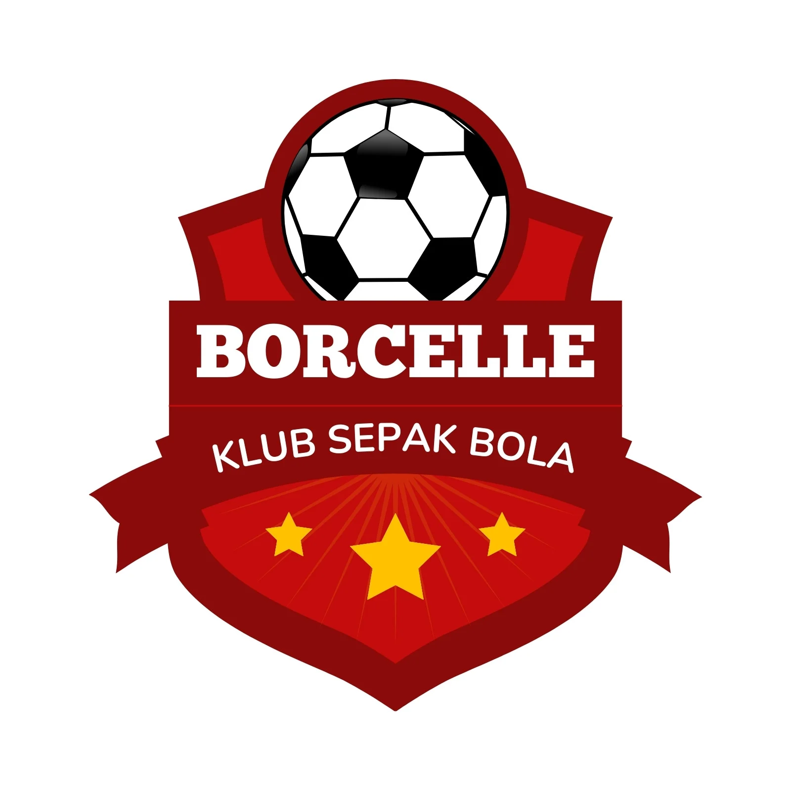

M. PADIL
PELAJAR MUDA INDONESIA
Kumpulan informasi, data, atau dokumen yang menunjukkan pendidikan dan prestasi.
Hubungi Saya
Kumpulan informasi, data, atau dokumen yang menunjukkan pendidikan dan prestasi.
Hubungi SayaSaya adalah seorang pelajar Indonesia. Saya pernah bersekolah di MI Al-Mubarokah, SMP Nazwa Asy-Syarif, dan sekarang saya sedang menempuh pendidikan di SMK Negeri 1 Rongga. Saya ingin menjadi siswa yang berprestasi, rajin, terampil, dan gembira. Semoga saya lulus di sekolah ini agar bisa menggapai cita-cita, membanggakan orang tua, dan membuat mereka bahagia.
Cita-cita saya ingin bergabung dengan PT Yamaha / PT Honda karena perusahaan ini merupakan pemimpin pasar industri otomotif yang memiliki reputasi global sangat baik. Bekerja di perusahaan dengan standar manufaktur internasional akan memberikan saya kesempatan belajar dan berkontribusi langsung.


Hobi sepak bola dan futsal sangat diminati karena menyehatkan tubuh, seru, dan menjadi sarana efektif untuk bersosialisasi.

Kelas I-VI - Keagamaan
MI AL-MUBAROKAH Adalah sekolah dasar yang berada di Kp. Cicadas RT 01 RW 18, Desa Sukamanah, Kab. Bandung Barat.

Kelas VII-IX - Keagamaan
SMP NAZWA ASY-SYARIF Adalah sekolah menengah yang berada di Kp. Cikawung RT 06 RW 10, Desa Sukamanah, Kab. Bandung Barat.


Kelas X-XII - Rekayasa Perangkat Lunak
SMK NEGERI 1 RONGGA Adalah sekolah menengah kejuruan yang berada di Kp. Cimapag RT 08 RW 15, Desa Cibedug, Kab. Bandung Barat.
Pembinaan usia dini, peningkatan mutu kompetisi berjenjang, dan pembenahan infrastruktur secara merata.
Sistem berbasis web yang dapat diikuti oleh siapapun dan dimanapun.
Mencakup sistem pendidikan, sistem kompetisi online, dan sistem tanya jawab di setiap materi.
mpadil@student.smkn1rongga.sch.id
Cicadas, Sukamanah, Bandung
github.com/batunawing